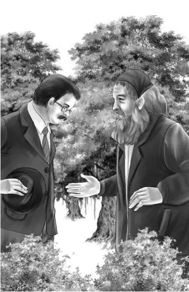

Chapter 3 Beaver Man
列车整夜未停。夜色中，班尼大喊了一声：“天亮的时候我会告诉你！”
“天亮？”爷爷突然醒了过来，“天已经亮了？”
亨利轻声道：“不，爷爷，是班尼在说梦话。”
但是等到天真的亮了，班尼却说：“我昨晚根本没睡着。”
亨利大笑起来。“哦，是吗？” 他问道。
“是啊。”班尼又说道，“你跟爷爷倒是睡着了，整夜都在打呼噜。”
“真不好意思，让你整晚都没睡好，班尼。”奥登先生说着，冲亨利眨了眨眼，“我知道的，我确实打呼噜了。”
“我困得马上就能睡着。”班尼说。
“哦，别这样，班尼！”维莉叫道，“睡着了你就看不到海狸了。我们九点钟要到海狸湖去，你忘了吗？”
“对呀！”班尼赞同道，“我非常想看海狸。也许我可以忍住瞌睡，一直等到九点。”
吃完早餐，班尼说：“我要到后面的看台上去，一直待到九点。”
这次，两个姐姐也跟着走了出去。列车一路经过很多小站，但都没有停。奥登家的孩子坐在看台上，对看到的每个人挥手。
突然班尼说：“杰西，经过上个车站时，你有没有注意到车站里的那些工人？他们在指着我们的大尾车笑。”
“注意到了。”杰西说，“我想那是因为我们看起来有些滑稽，三节尾车并在一起。”
“但这也没有那么可笑啊！”班尼说，“我敢肯定，他们是指着大尾车，还有我们。”
维莉说：“我可不认为他们是在指着我们，他们是指着车上的什么东西。”
“他们当时指着我们的头顶，维莉，”班尼说，“也许尾车上面有什么东西。”
几个人抬头望去，却只看到车厢的号码——777。
没过多久，他们听到卡尔先生叫了起来：“海狸湖！海狸湖到了！”
列车停下，所有人都做好跳下去的准备。卡尔先生和阿尔正在梯子旁等着他们。
班尼说：“哦，我想问问您关于大尾车的事情。您说过它有一段历史。”
卡尔先生笑了起来：“我是这样说过，但现在没时间讲了。我甚至不能陪你们一起过去，因为必须安排人卸货。不过阿尔可以陪你们一起去。”
阿尔在前面带路。一条小河从铁路下方穿过，几个人顺着小河走，很快就来到了一处茂密的森林里。阿尔领着他们，沿着一条小路走了下去。大家已经看不见小河，但一路上仍然能听到湍急的水流声。
阿尔指着一块写有“海狸湖”字样的标牌，“你们可以自己走过去，不过我也想亲眼看看海狸。”
班尼说：“我猜那块牌子是海狸老先生放的。”
“没错。”阿尔说，“他有时候会过来聊天，通常我会在这里遇到他。”
但此时，这里却一个人影都没有。
很快第二块标牌出现了，上面写着：
请勿讲话
看到这个，连班尼都不再说话了。
奥登家的孩子们看到一顶类似帐篷的东西，里面放着一把长椅。帐篷的顶部和一侧全都经过处理，看起来跟一丛真的灌木差不多。一块木牌上写着：
请坐下观察，只能容纳六个人
每个人的心里都想着同一件事——好幸运！算上阿尔在内，他们刚好六个人！
奥登家的孩子们可以透过灌木丛间的空隙望见那条小河，只不过此时的小河已经变成了湖泊。阿尔指了指，大家都看见了一只大海狸。
那只海狸一直向前游着，只有脑袋露在水面上。海狸来到自己窝棚的顶部，突然停了下来，开始向上爬去。班尼注意到，海狸身上沾满了污泥，很快他就发现了原因。
海狸爬上房顶，再滑下去，刮掉了身上的泥巴，接着又爬到房子的另一侧，甩掉了尾巴上的泥巴。这时奥登家的孩子才明白，原来海狸是要清洁身体。
突然，灌木丛中发出一阵巨大的哗啦声，一棵树倒下来，扑通一声落在水里。树桩旁是另外一只海狸，正是它用牙齿咬断了小树的树干。
奥登家的孩子两眼不眨地望着海狸，只见它沿着刚刚放倒的小树走过去，在树木中间开始啃起，将树拦腰断开。
树木原本有一段掉入了水中，海狸把树干啃为两截后，游了出去，推动着两截树干，一直来到湖边的水坝上。两根树干长度相仿，刚好浮在水面上，不让坝里的水溢出来。
这时，阿尔看了看手表，站起身来，打算离开，其余的人都跟在他身后。他们走到第一块标牌跟前时，听到树林中传来一阵响动。
“大家好！”一个低沉的声音传来，所有人都转过身去。
“没错，我就是海狸先生。”那人说道。他长着浓密的白发，卷曲而花白的胡须几乎遮住了整张脸，脸上挂着微笑。
爷爷说道：“你的工作做得不错，救了这么多海狸。它们是些非常了不起的动物。”
“谢谢！”海狸先生说，“在某些方面，它们比我们还聪明。我能问一下，你们是怎么来到这儿的吗？”
爷爷笑了起来，回答道：“我们是坐着货车的尾车过来的。我们正在用一种新的方式度假。”

“这个小伙子好像玩得很开心呢！”海狸先生说着，望了望班尼。
班尼说：“是的，我玩得非常高兴。我们做饭、吃饭、睡觉全在尾车里，我们的车号是777。”
“什么？”海狸先生问道，“777？”他突然转过身，一句话也不说，就逃进了树林里。
“您知道些什么？”班尼看着他的背影喊道。
“哎，他到底怎么了？”亨利问道。
“算了！”阿尔说，“他一直都很奇怪，我们不要打扰他了！”
爷爷说：“我只能说，他很怪。”
奥登一家人来到车站，仔仔细细地打量了一番尾车车厢，却没有看出有任何怪异的地方，只看到一个号码——777。
维莉轻声道：“777这个号码，足以把海狸先生吓走。”
列车再次启动了。奥登先生说：“阿尔告诉过我们，下一站是潘德尔。我们要下车打水，还要弄些冰块。也许潘德尔的居民会告诉我们海狸先生的事情。也许他们知道，我们的777号尾车有什么怪异的地方。”